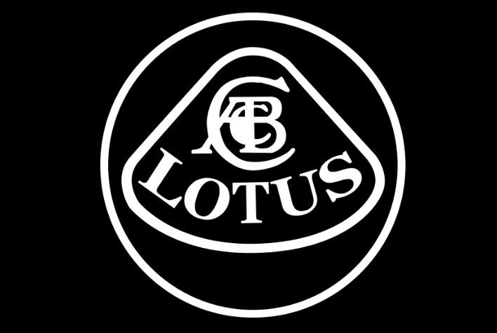

Lotus
Ingeniería Ligera y Pureza de Conduccion

Lotus Cars es un fabricante británico conocido por sus coches deportivos y de carreras ligeros y de manejo excepcional. Fundada por el brillante ingeniero Colin Chapman, la filosofía de Lotus siempre ha sido la de la simplicidad, el bajo peso y una conexión pura entre el conductor y el coche.
Historia y Origen
Lotus Engineering Ltd. fue fundada en 1952 por Anthony Colin Bruce Chapman. Inicialmente, construían coches de competición basados en chasis de otros fabricantes, pero pronto pasaron a producir sus propios vehículos.
La máxima de Colin Chapman era "Simplify, then add lightness" (Simplifica, luego añade ligereza). Creía que el bajo peso era clave para el rendimiento, la agilidad y la eficiencia.
La empresa se dividió en Lotus Cars (para coches de carretera) y Lotus Engineering (consultoría de ingeniería para otras empresas automotrices, incluyendo chasis para F1 de otros equipos y desarrollo de motores) y Lotus Racing (para sus propias actividades en Fórmula 1 y otras categorías).Team Lotus (la división de carreras) fue uno de los equipos más exitosos e innovadores en la historia de la Fórmula 1, ganando múltiples campeonatos mundiales.
A pesar del éxito en la competición, Lotus Cars a menudo tuvo dificultades financieras y pasó por varios propietarios, incluyendo General Motors, Romano Artioli (dueño de Bugatti en los 90) y Proton (fabricante malayo). En 2017, la mayoría de Lotus fue adquirida por el gigante automotriz chino Geely (propietarios también de Volvo, Polestar, etc.), lo que ha inyectado capital para nuevos modelos y tecnologías.
Logros y reconocimientos 🏆
Team Lotus ganó 7 Campeonatos del Mundo de Constructores y 6 Campeonatos del Mundo de Pilotos con pilotos legendarios como Jim Clark, Graham Hill, Jochen Rindt, Emerson Fittipaldi y Mario Andretti. Creó algunos de los coches deportivos más apreciados por los entusiastas, como el Seven, Elite, Elan, Europa, Esprit, Elise, Exige y Evora. El Elise, en particular, revitalizó la marca en los años 90 con su chasis de aluminio extruido pegado.
Pioneros en muchas tecnologías de F1, incluyendo chasis monocasco, alerones aerodinámicos, efecto suelo y la integración del motor como elemento estructural. Los coches Lotus son consistentemente elogiados por su manejo excepcional, agilidad y la pura conexión que ofrecen al conductor
Lotus Engineering ha sido fundamental en el desarrollo de vehículos y tecnologías para muchos otros fabricantes de automóviles.
Innovaciones Tecnologicas
Chasis Backbone: Utilizado en el Elan, un chasis central fuerte y ligero.
Construcción de Fibra de Vidrio: Pioneros en el uso de fibra de vidrio para carrocerías (Elite).
Chasis de Aluminio Extruido Pegado:Introducido en el Elise, una técnica que utiliza secciones de aluminio extruido pegadas en lugar de soldadas, creando una estructura increíblemente ligera y rígida.
Innovaciones Aerodinámicas (F1 y Carretera): Desde los primeros alerones hasta el efecto suelo en F1, y aerodinámica inteligente en coches de carretera.
Suspensión: Desarrollo de sistemas de suspensión que priorizan el agarre mecánico y la respuesta al conductor sobre la comodidad excesiva.
Electrificaccion: Con el hipercoche Evija, Lotus entró en la era eléctrica con un vehículo de alto rendimiento y tecnología de vanguardia.
Impacto Cultural
Pureza de Conducción:La marca es sinónimo de la experiencia de conducción pura, sin filtros ni exceso de peso o electrónica innecesaria (históricamente).
Marca de Ingenieros y Entusiastas: Atrae a un público que valora la ingeniería inteligente y el rendimiento derivado de la ligereza y el buen manejo más que la potencia bruta o el lujo ostentoso.
Icono de F1: El legado de Team Lotus en la Fórmula 1 es una parte indeleble de la historia del automovilismo.
Apariciones en Cine: El Lotus Esprit ganó fama como el coche submarino de James Bond en "La Espía Que Me Amó".
Filosofía "Simplify, then add lightness": Esta frase de Colin Chapman se ha convertido en un mantra en el diseño automotriz y la ingeniería en general.
Listado de Modelos 🚗
- Emira
- Evija
- Electro
- Emeya
- Seven (1957-1973)
- Elite (1957-1963)
- Elan (1962-1975)
- Europa (1966-1975)
- Esprit (1976-2004)
- Carlton/Omega (1990-1992)
- Elise (1996-2021)
- Exige (2000-2021)
Modelos en produccion


Modelos Iconicos

.jpeg)


Datos curiosos:
- El nombre: Se cree que el nombre "Lotus" proviene de la fascinación de Colin Chapman por el loto como símbolo de pureza o, posiblemente, de la flor de loto que se encuentra en los templos hindúes. Otra teoría es que se refiere al refrán "googie my Lotus", popular en los años 50, cuyo significado exacto es incierto.
- Iniciales ACBC: Las iniciales "ACBC" que aparecen en el logo de Lotus (y a veces en el chasis) corresponden a Anthony Colin Bruce Chapman.
- Elise Nombrado por la Nieta: El nombre del Lotus Elise proviene de Elisa Artioli, nieta de Romano Artioli, quien era dueño de Lotus (y Bugatti) cuando se lanzó el coche en 1996.
- Motor Toyota: Muchos modelos Lotus modernos (Elise, Exige, Evora) han utilizado motores de origen Toyota (modificados por Lotus) debido a su fiabilidad y bajo peso.
- Consultoría Famosa: Lotus Engineering ha trabajado en una amplia gama de proyectos, desde el desarrollo de la suspensión para el DeLorean DMC-12 hasta motores para motocicletas y chasis para coches de otros fabricantes.
- El Evija: El Lotus Evija es el primer hipercoche eléctrico de la marca y el coche de producción en serie con la mayor potencia del mundo (más de 2000 CV).